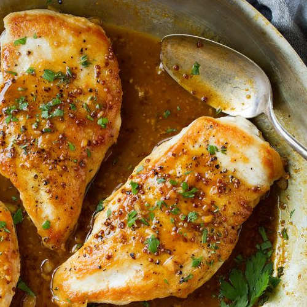

Chicken with Pan Sauce
Description
Pan seared chicken breast with a pan sauce made from simple ingredients.
Takes a bit to make but is well worth it.
Ingredients
- 3 boneless chicken breast, cut in half long ways.
- 12oz chicken stock
- olive oil
- ½ shallot
- 3-4 garlic cloves
- 3 tbsp butter
- juice of ½ lemon
- salt & pepper to taste
- 2 pinches of parsley
Directions
Chicken
- Pat dry chicken breasts and season with salt & pepper
- Put around 1 tbsp olive oil in pan
- Cook chicken until semi firm and bouncy to the touch
Pan Sauce
- Reoil the pan a bit.
- Cook shallots and brown a little bit then add garlic.
- Add chicken stock.
- Turn heat to medium and start to reduce down.
- Add any chicken juices left from chicken resting.
- Add salt & pepper to taste
- When sauce has reduces by half add Butter
- Sauce is done when liquid sticks to the back of a spoon and is noticeably thick
- Reduce heat to low and add lemon juice
- Add parsley
Note: Bubbles will begin to get bigger as stock reduces